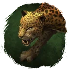
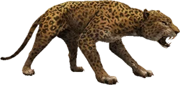

Открыть в интерактивной вики →

| Уровень | 50 |
|---|---|
| Прокачка | есть |
| Ранг в стае | 4 |
| Здоровье | 1500 |
| Мана | 800 |
| Выносливость | 1200 |
| Статистика | Уровень: 50, ранг: 4, здоровье: 1500, мана: 800, выносливость: 1200 |
Цена

Где взять
Покупается в Клетке гильдий 1
Выкуп
Выкуп за смерть:
5х Платина либо откат 4 часа
Платина либо откат 4 часа
5х
Платина либо откат 4 часаНавыки


Скины
Доп. информация
Требуемый уровень: 50
Цена: 1 700 000 золота и 300 платины
Покупка: I гильдейская клетка
Может получать опыт — ДА
Описание
 | Могучий дикий кот, который с яростью бросается на врагов, рвёт и режет. Его жертвы чаще всего умирают от потери крови, даже не поняв, что их убило. Отличный спутник для любого героя. Атакует физически и ментально. Использует: Природная стойкость, Рёв, Боевой клич, Укус, Обычная атака. | |